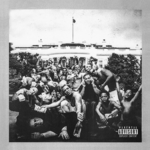

← back to home
Trebbbble
A website that can recognize music from short-form videos.
A common problem that a lot of people have when it comes to watching short-form content stems from one of its main features: The music.
With songs becoming more and more viral overnight, it's difficult for those watching short-form content like TikTok, Instagram Reels, or YouTube Shorts to continue listening to the music shown in their videos when the song is only played for 10-15 seconds.
This is exactly what Trebbbble was created for.



Complexion (A Zulu Love)
Kendrick Lamar
Using ACRCloud's music recognition API and some relatively simple requests, users can provide a link to whatever short-form content they like and have some music displayed to them.